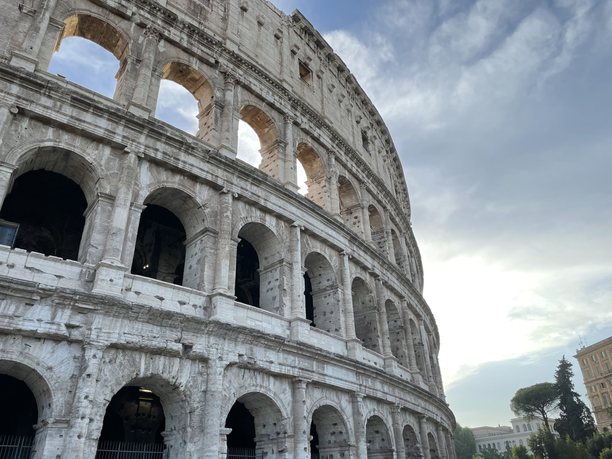

- My Favorite Trip - Portugal
- Cities/Places Visited: The Azores, Lisbon, Lagos
- I loved my time in Portugal because of the vast history and the natural beauty present in Portugal. One of my favorite activites we did there was canyoning, which is essentially a combonation of rock climbing, hiking, and cliff jumping. We put on helmets, wetsuits, and hiking boots and followed a 5 mile route. We rappelled at 3 points during the route, jumped off of 5 rock faces, the highest being 25 feet tall, and hiked on a trail with several obstacles in the way. We also visited a black-sand beach while there, and while the water was cold, the waves were massive, and I had a great time bodysurfing. We also visited several museums full of historical aritifacts from Portugal's storied history, went whale-watching, went cliff jumping, and ate phenomenal food.
- I would give Portugal a 9/10
- Below is a photo I took of the Colosseum in Rome during a recent trip
- Formula 1
- I first got into F1 in January of 2022. I was browsing Netflix and found the docuseries 'Drive to Survive, which chronicled the events of each F1 season since 2018. I started watching and got instantly hooked.
- I made it thorugh all 3 seasons and after a quick google search, I found that the 2022 season would start in two weeks. My brothers and I watched the first race in Bahrain and we all loved it, and from there the rest was history. What drew me to F1 was the sheer commitment of the drivers to perfecting their craft.
- They need to be extremely fit, but not bulky with muscle to save weight, they need to have all 23 tracks memorized before they race there, and their cornering speeds in the cars is unlike anyhting I've seen before. I also admire how niche F1 is, out of the thousands of kids that start in karting, only 20 drivers are on the F1 grid; it's extremely competitive and only the best drivers make it into F1.
- Below is a Tableau visulization of the 2021 F1 season, check it out!
- Skiing
- I've been sking since I was 8, and even though I've lived in places with no local skiing until I moved out to Provo for school, I've gone with my family at least once a year.
- I've skied at 14 different resorts in 5 countries, and I think my favorite one is Mammoth in California. The snow was unreal, and the runs were exactly what I like, wide and steep so I can just point my tips downhill and carve. I think Schmittenhöhe in Austria is a close second though, the scenery there was the best I've ever seen on a ski mountain.
- Part of what got me into skiing was watching old Warren Miller ski movies, I have a ski film below for you to enjoy.
